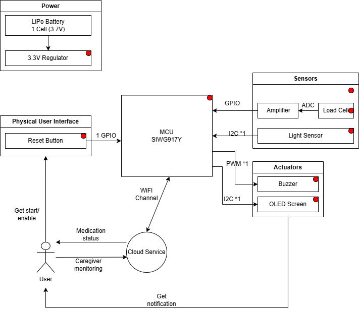
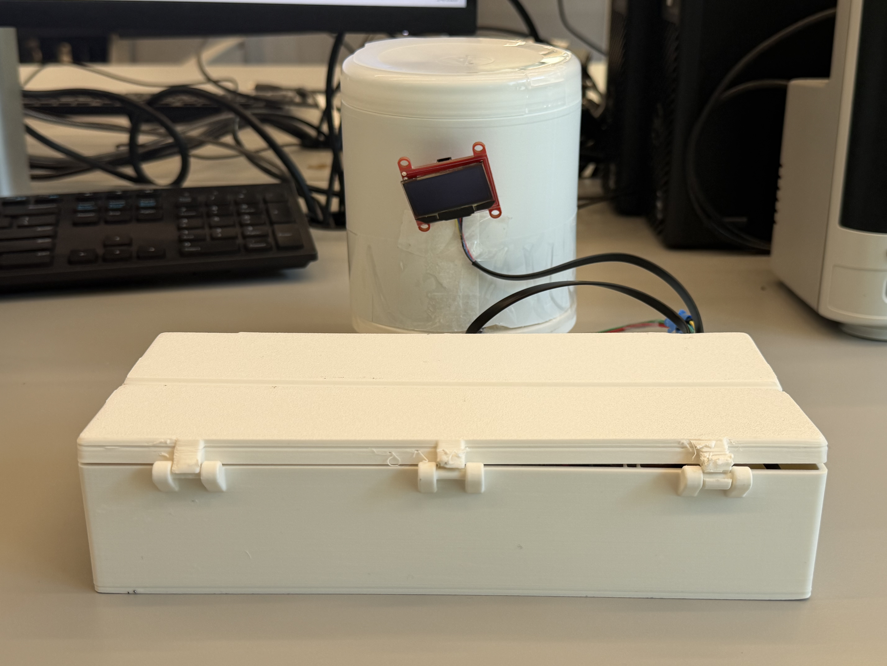
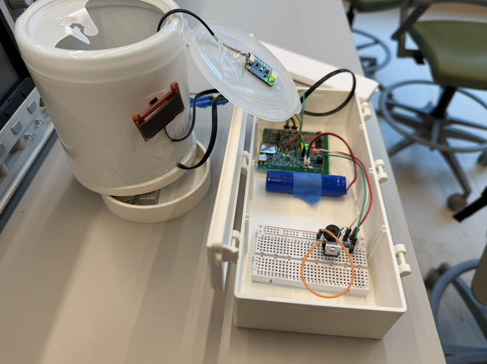
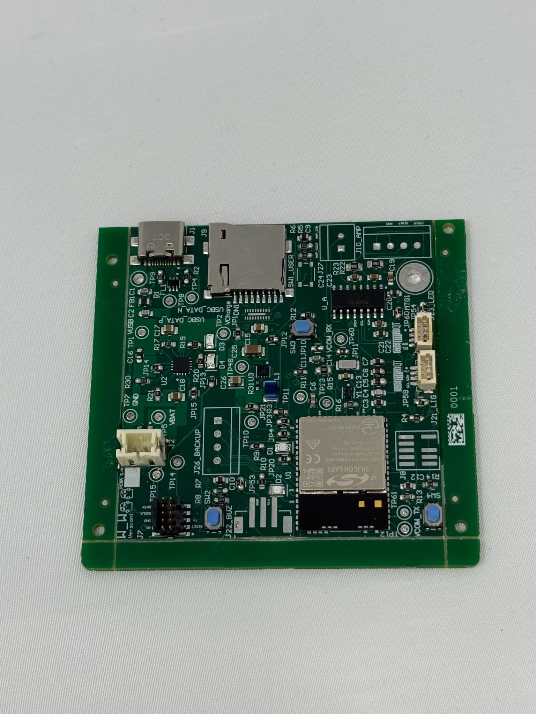
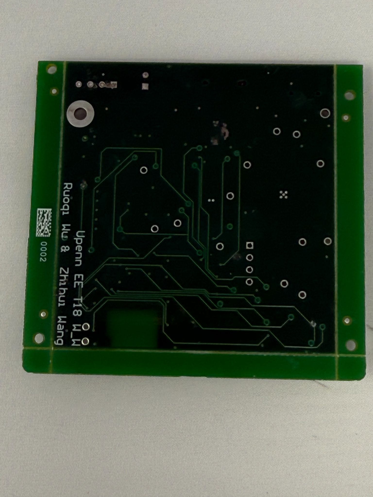
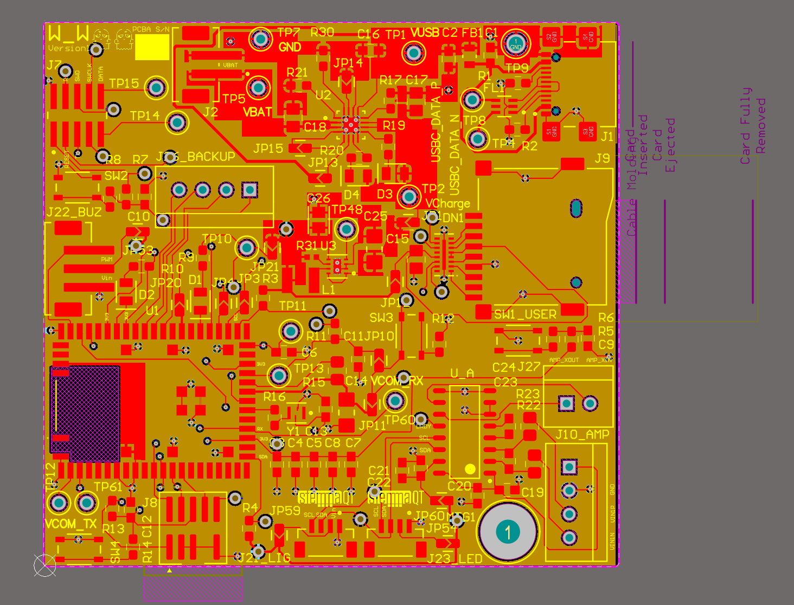
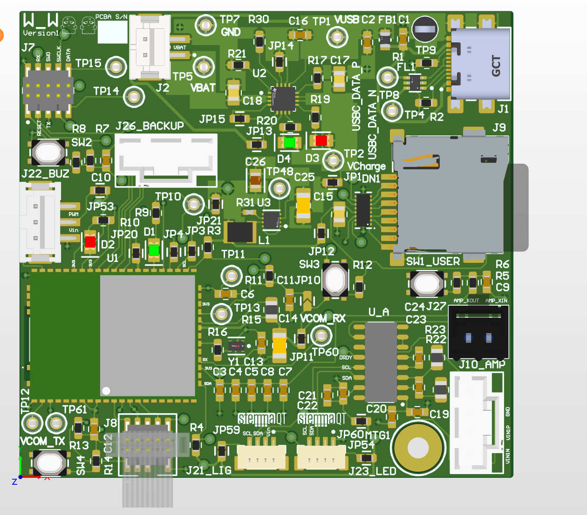
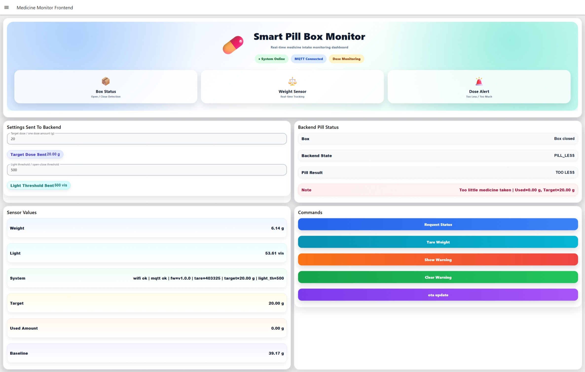
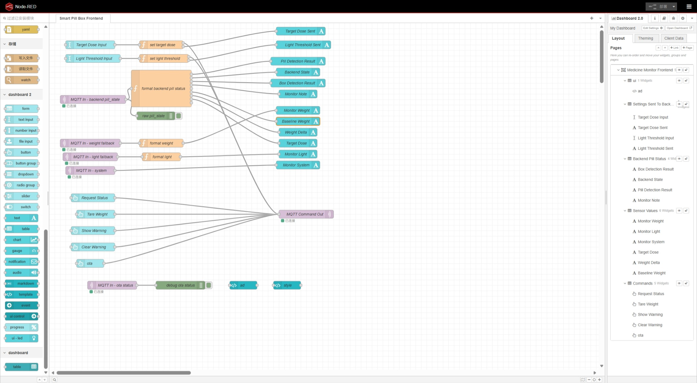

Light-based lid detection
The TSL2591 light sensor separates box-open and box-closed state detection from medication classification.
ESE5160 Final Project · Team T18
A connected pill box that detects box opening, monitors medication weight change, gives local feedback, and reports live status to a Node-RED dashboard through Wi-Fi and MQTT.
Project Summary
The smart pillbox detects whether the box is open or closed and estimates how much medication has been removed. It uses light sensing for lid state, load-cell weight sensing for pill intake, an OLED and buzzer for local feedback, and a Node-RED dashboard for remote monitoring.
The system was designed to address missed doses, incorrect doses, and difficulty tracking medication usage. It classifies medication behavior as too little, correct, or too much based on weight change during a pill-taking session.
The TSL2591 light sensor separates box-open and box-closed state detection from medication classification.
A load cell with HX711 measures medication weight changes and supports tare, calibration, and gram conversion.
The OLED and buzzer provide warning, normal-status, and medication-state feedback directly on the device.
Wi-Fi and MQTT connect the embedded system to Node-RED for live sensor data and threshold updates.
System Architecture

Validation
| ID | Requirement | Current Implementation | Validation / Evidence | Status |
|---|---|---|---|---|
| HRS-01 | Use a single-cell LiPo battery as the primary power source. | Battery support was designed, but final validation mainly used the development power setup. | Board bring-up and full-system operation were verified during demo testing. | Partially Met |
| HRS-02 | Provide a stable 3.3V rail for the MCU and peripherals. | The board and peripherals operate from regulated 3.3V. | Verified through MCU, light sensor, OLED, load cell interface, and buzzer operation. | Met |
| HRS-03 | Use the SIWG917Y MCU for Wi-Fi connectivity. | The SIWG917Y is the main controller and handles Wi-Fi/MQTT directly. | Verified through MQTT communication with the dashboard. | Met |
| HRS-04 | Include a load cell and amplifier for pill weight measurement. | The final prototype includes load cell measurement with tare, calibration, raw reading, and grams conversion. | Verified by live weight display, baseline reset, and measured weight updates. | Met |
| HRS-05 | Include a light sensor for interaction context. | The system publishes light data to MQTT and Node-RED. | Verified through live dashboard readings and continuous sampling. | Met |
| HRS-06 | Provide audible reminders using a buzzer. | The buzzer supports local warning behavior. | Verified through warning-state testing, though not formally measured by sound level. | Partially Met |
| HRS-07 | Display reminder and status information. | An OLED display replaced the original LED-screen plan. | Verified by OLED status rendering in integrated firmware. | Met · OLED Design Change |
| HRS-08 | Include a physical On/Off button. | Power button behavior was explored, but not fully validated in final integration. | No final validated power-state demo was included. | Partially Met |
Validation
| ID | Requirement | Current Implementation | Validation / Evidence | Status |
|---|---|---|---|---|
| SRS-01 | Sample load cell and compute filtered weight at least once per second. | The application loop samples sensors continuously and publishes MQTT status once per second. | Verified by live dashboard weight updates. | Met |
| SRS-02 | Detect pill removal using a configured threshold within a 5-second window. | Node-RED uses threshold and baseline weight, but does not strictly enforce the 5-second window. | Verified using dashboard threshold setup and medication-status logic. | Partially Met |
| SRS-03 | Maintain RTC-based scheduled reminders within ±1 minute/day. | RTC scheduling was planned but not demonstrated in the final prototype. | No final RTC accuracy validation was completed. | Not Met |
| SRS-04 | Trigger local alert if no pill removal occurs within 5 minutes of reminder time. | Manual warning behavior works through dashboard commands, but autonomous RTC-based reminder flow is incomplete. | Warning behavior was manually demonstrated. | Partially Met |
| SRS-05 | Stop buzzer and update display after valid pill removal. | Warning commands and medication-state display updates are supported. | OLED state updates and warning-state control were demonstrated. | Met |
| SRS-06 | Report Wi-Fi connection status within 30 seconds. | Firmware connects to Wi-Fi and publishes system status, though full provisioning UX was not demonstrated. | Verified through MQTT connectivity and system status. | Met |
| SRS-07 | Upload logged dose events to cloud service. | The system publishes live light, weight, and state data, but full timestamped logging is incomplete. | Verified through live MQTT dashboard processing. | Partially Met |
| SRS-08 | Detect and warn for abnormal medication behavior. | Dashboard and MCU support normal, too little, correct, and too much medication states. | Verified through medication classification and OLED support. | Met |
Photos & Screenshots









Challenges
A major challenge was making the load-cell subsystem reliable. The first I2C-based amplifier approach did not work well in practice, so the design moved to a different amplifier path that worked better with the hardware and firmware setup.
Another challenge was keeping system logic clean. The final design separates lid state detection from medication classification: the light sensor handles box-open state, while the weight sensor handles pill-state classification.
Learnings & Next Steps
PCB fabrication was only the beginning of hardware development. The team learned that critical sensing paths need early validation, especially mixed hardware-firmware interfaces such as load-cell measurement.
Next steps include improving load-cell calibration, threshold tuning, abnormal-case testing, enclosure integration, OTA workflow, and event logging for more practical real-world use.
Project Links
Final embedded C firmware for the Smart Pillbox system.
View Firmware RepositoryNode-RED flow file used for the dashboard, MQTT processing, and medication-state logic.
View Node-RED FlowNo additional software repository is required beyond the firmware codebase and Node-RED dashboard flow.